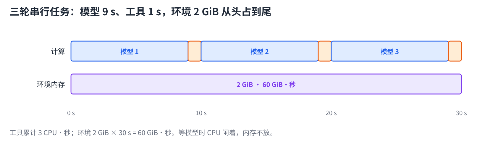
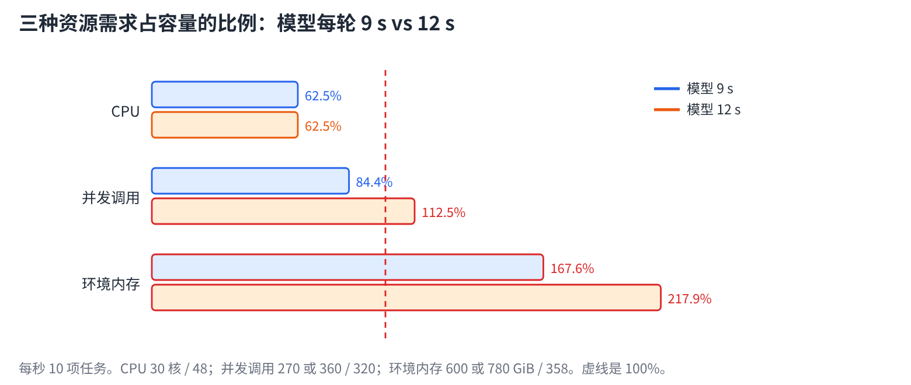
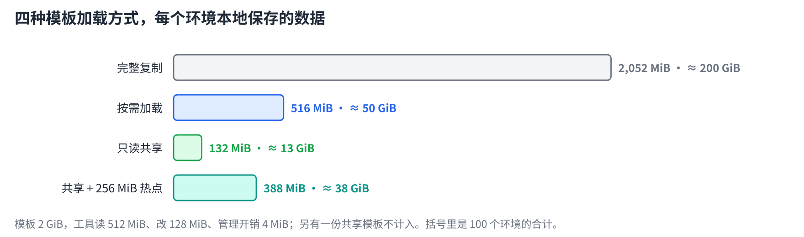
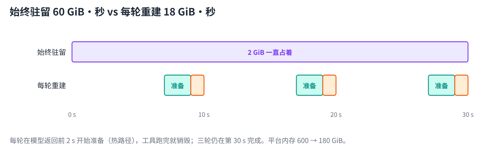
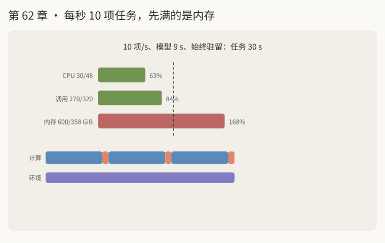

第 62 章 · Agent 任务的资源需求与运行环境：先满的是内存，不是 CPU
本地运行
git clone https://github.com/wikieden/ai-infra-from-constraints
cd ai-infra-from-constraints/code/notebooks
pip install jupyterlab torch numpy
jupyter lab ch62_agent_sandbox.ipynb也可以下载后直接用 VS Code 打开 .ipynb 运行。需要 GPU 的章节在 Colab 里选「代码执行程序 → 更改运行时类型 → GPU」。
本章回答：一项三轮的代码修复任务，30 秒里 CPU 只用了 3 秒，为什么平台先被内存卡住？每秒 10 项任务需要多少核、多少内存、多少并发调用？模型变慢为什么会让工具平台的内存更不够？进程、容器、microVM 隔离差在哪？按需加载、只读共享、暂停、每轮重建各省什么？提前准备环境要提前多少？
讲解日期：2026-11-24 · 上一章：第 61 章 从系统方案到期限与硬件选择 · 下一章：第 63 章 共享资源池与 RL 资源配比
对应原文：materials/ai-infra-book/manuscripts/11-资源调度与运行环境.md章首 L1–L27、§11.1 L29–L115、§11.2 L117–L288（例 11-1、11-2，图 11-1 至 11-23）（略讲：隔离与加载细节只讲结论）
本章缩写：microVM（微型虚拟机）· vCPU = virtual CPU（虚拟 / CPU）· RSS = Resident Set Size（驻留 / 集 / 大小）· DAX = Direct Access（直接 / 访问）· eBPF = extended Berkeley Packet Filter（扩展 / 伯克利 / 包过滤器）· QEMU = Quick EMUlator（快速 / 模拟器）· VFIO = Virtual Function I/O（虚拟 / 功能 / 输入输出）。全部缩写见 缩写与术语表
第 9、10 部分搭好了推理和训练服务。本部分把模型服务、工具环境和共享资源组织成任务运行系统：一次模型调用或一次工具执行只是任务的一个步骤。
本部分的贯穿设计题（原文 L11–L27）：
| 设计输入 | 给定值 |
|---|---|
| 任务到达 | 每 0.1 s 一项（10 项/s） |
| 每项任务 | 3 轮，每轮先调模型、再跑工具 |
| 模型服务 | DeepSeek V4-Flash，每副本 4 张 B200、同时 32 个会话；每次输出 355 token × 25.3 ms ≈ 9.0 s |
| 模型并发容量 | 10 个副本（40 张 B200），最多 320 次调用同时进行 |
| 工具 | 1 个 CPU 核、1 s |
| 活跃环境 | 1 vCPU、2 GiB 的 microVM |
| 工具平台 | 一台 EC2 m5d.metal：48 核、384 GB（≈ 358 GiB） |
| 业务目标 | 至少 95% 的提交在 24 s 内通过测试 |
讲解
第一步：一项任务的执行与等待（2026-11-24）
类比：订了包间的饭局。 菜一道道等厨房做（模型），每道菜上来吃一分钟（工具），包间却从头订到尾。
原文 L29–L58：每轮模型 9 s + 工具 1 s，三轮串行 30 s。
- 工具累计只用 3 CPU·秒；环境一直占 2 GiB，\(2 \times 30 = 60\) GiB·秒。
- 工具要等完整的调用参数才能执行，流式输出提前返回的文本帮不上；但模板下载、运行时初始化只依赖环境类型，可以放到模型生成期间。

图 62-1 · 上面是计算，下面是内存：工具只在三个小橙块里用 CPU，内存面积却是整整 60 GiB·秒。
一句话：任务的大部分时间在等模型，等的时候环境照样占内存。
第二步：平台需求：内存先满（2026-11-24）
类比：停车场。 车流不大，但每辆车停很久，车位就先满了，收费员（CPU）还闲着。
原文 L60–L97：资源需求率 = 任务到达率 × 每任务平均资源需求。
| 资源 | 需求 | 容量 | 占比 |
|---|---|---|---|
| CPU | 10 × 3 = 30 核 | 48 核 | 62.5% |
| 并发模型调用 | 10 × 3 × 9 = 270 | 320 | 84% |
| 环境内存 | 10 × 60 = 600 GiB | 358 GiB | 168% |
例 11-1：358 GiB 最多同时 178 个环境，每个留 30 s，每秒只能开始约 5.9 项，CPU 还空着 18 核。Little 定律：\(\overline{N}_{\mathrm{env}} = 10 \times 30 = 300\) 个环境。

图 62-2 · 模型调用从 9 s 变 12 s：CPU 不变（30 核），并发调用 360 越过 320，内存 780 GiB。模型慢了，工具平台的内存更不够，因为环境要留得更久。
- DeepSeek DSec（RL rollout 与评测的沙箱平台）：约九成容器和 microVM 平均只用申请 CPU 的 5% 以内，于是超卖；单节点曾跑 3,200 个容器或 800 个 microVM。再往上，限制是等待期间的内存和同核任务互相拖慢。
- 错开启动：四进程工具 RSS 峰值 320 → 80 MiB，整组完成 0.10 → 0.54 s。
一句话：Little 定律算出同时有多少环境，内存 = 环境数 × 每个大小。
第三步：哪些状态必须留（2026-11-24）
原文 L99–L115：前两轮结束时已过 20 s，工具只用了 2 s；丢了工作目录要从头来，重做的是 20 s，不是 2 s。
| 状态 | 记录什么 | 丢了怎么恢复 |
|---|---|---|
| 模型上下文 | 任务、模型版本、输入前缀、已采用输出 | 重新提交上下文 |
| 工作目录与文件 | 仓库版本、文件摘要、补丁版本 | 从持久副本取回或重新打补丁 |
| 进程与内存 | 实例、进程状态 | 恢复快照或重跑工具 |
| 工具结果 | 操作、尝试、输入文件版本 | 查已保存结果或再跑 |
| 外部操作 | 目标系统的操作标识与提交状态 | 查询、去重或补偿 |
任务、工具操作、每次尝试要各有标识：同一结果传两次只需去重，同一测试跑两次已经花了两份资源。还要区分"程序结果不对"（要修程序）和"进程资源不足中止"（要恢复执行）。
一句话：能保留什么，决定出错后要重做多少。
第四步：隔离与环境创建（结论）（2026-11-24）
类比：合租、隔断、独栋。 进程共享一个内核（合租），容器加命名空间和配额（隔断），microVM 有自己的内核（独栋，但精装修只留必需的）。
原文 L119–L199：
- Firecracker（AWS 2018 开源，NSDI 2020）兼顾硬件虚拟化隔离、启动速度和内存开销；E2B 用它跑工具环境。DSec 按任务选后端：短小无状态的放复用容器，仓库级任务用容器，安全相关用 microVM，需要完整商用系统的用完整虚拟机。
- 还要防 agent 本身：RL 训练中的 agent 会找捷径（伪造给平台代理的请求、翻日志找答案、改写
/bin/bash），也会无意搞坏机器（grep读/proc触发内核缺陷，yes输出攒几十 GB）。三个方向：沙箱之间靠虚拟化与配额，agent 与平台代理之间靠 AppArmor，对外网络靠 eBPF 白名单；输出量和写盘量另设上限。
例 11-2（100 个环境，模板 2 GiB，读 512 MiB、改 128 MiB、管理 4 MiB）：
| 加载方式 | 每个环境本地 | 100 个 |
|---|---|---|
| 完整复制 | 2,052 MiB | ≈ 200 GiB |
| 按需加载 | 516 MiB | ≈ 50 GiB |
| 只读共享（只留脏页） | 132 MiB | ≈ 13 GiB |
| 共享 + 256 MiB 热点 | 388 MiB | ≈ 38 GiB |

图 62-3 · 另有一份共享的 2 GiB 模板不计入。省下的是加载，代价是首次访问缺页时等。
- 25 GbE（3.125 GB/s）：冷路径取回 2 GiB + 加载 0.5 GiB 至少 0.86 s，热路径 0.17 s；首次执行再缺 1 GiB 多 0.34 s。DSec 抽查镜像运行时只读到 4%–13%；数千容器同时启动，按需加载和全预缓存差不多，先整份拉取慢约 1.7 倍。
- microVM 的 page cache 宿主一份、每台虚拟机各一份；DSec 用 virtio-pmem + DAX 共用一份，内存峰值降约四成。虚拟机里释放的内存宿主未必收得回：空闲页报告（virtio-balloon）+ DAMON 回收冷页，累计内存占用少约五分之一。共享只读页主要降峰值，回收冷页主要缩面积。
一句话：隔离越强越慢越占内存；加载越少启动越快，首次访问越要等。
第五步：暂停、每轮重建与提前准备（2026-11-24）
类比：饭局中间要不要退包间。 退了再订要手续时间；间隔短，手续时间就把间隔占满了。
原文 L201–L288：
- 暂停（E2B 每 GiB 保存约 4 s、恢复约 1 s）：2 GiB 环境 9 s 间隔，保存 8 s + 恢复 1 s 正好占满，一点没省；512 MiB 的环境能空出 6 s。暂停划算的条件 \(p_M M G > C_{\mathrm{transition}}\)。但 RL 训练被抢占时间隔以小时计：32K 个 2 GiB 沙箱约 70 TB，暂停两小时空出的时间是保存恢复的约 800 倍，DSec 抢占时就主动暂停全部沙箱。
- 每轮重建：工作目录和结果已持久化，每轮在模型返回前 2 s 开始准备（热路径），用完即销毁：
| 始终驻留 | 每轮重建 | |
|---|---|---|
| 每项内存占用 | 60 GiB·秒 | \(3 \times (2 + 1) \times 2 = 18\) GiB·秒 |
| 平台平均内存 | 600 GiB | 180 GiB |
| CPU | 30 核 | 33 核（每秒 30 次创建 × 0.1 CPU·秒） |
| 创建率 | 10 个/s | 30 个/s（Firecracker 单机最多约 150 个/s） |

图 62-4 · 工具的三个执行时刻没变，消失的是模型等待期间的内存。前提是下一轮要用的状态都写进了持久存储；装了依赖、起了数据库的 agent 做不到，只能保留环境再压驻留成本。
- 提前准备：准备 \(P\) 秒、提前 \(L\) 秒、预测命中率 \(h\)：
\(P = 2\)、\(h = 0.75\)：不提前 2 s，提前 1 s 1.25 s，提前 2 s 0.5 s，提前 3 s 还是 0.5 s，却每次多占 1.5 GiB·秒空闲内存。本地工具重放：从提前 50 ms 改成等待一开始就准备，内存占用多 24 倍。能在调用到达前准备好就够，不必更早。
场景代码：E2B 的沙箱接口（真实 SDK；pause / resume 为其测试中的接口，以文档为准）：
from e2b_code_interpreter import Sandbox
sbx = Sandbox(template="base", timeout=60) # 从模板快照启动 microVM，约 1 s
sbx.files.write("/repo/patch.diff", patch) # 工作目录也可以挂持久存储
r = sbx.commands.run("cd /repo && git apply patch.diff && pytest -q")
sbx.kill() # 每轮重建：用完即销毁
一句话：间隔短就重建，间隔长才暂停；准备只需赶在调用前完成。
动画演示：每秒 10 项任务要多少内存

可交互版：animations/62-agent-sandbox.html（滑块：任务到达率 2–20 项/s；模型每轮 3–15 s；环境策略 始终驻留 / 每轮重建）。
怎么看：
- 三根柱是 CPU、并发调用、内存占各自容量的比例，虚线是 100%（第二步）；
- 下面是一项任务的时间线，橙色块是环境占内存的时段；
- 播放：始终驻留 9 s（内存 168%）→ 模型 12 s（218%）→ 每轮重建（50%）→ 快速模型 6 s。
练习与作答记录
题 1（第二步）：任务到达 6 项/s，每项 4 轮，模型每轮 7 s、工具 2 s，环境 1 GiB 始终驻留。CPU、并发调用、内存各要多少？
作答记录：（待作答）
题 2（第五步）：环境 1 GiB、两轮之间等模型 12 s，按每 GiB 保存 4 s、恢复 1 s，暂停能空出多少秒？每 GiB·秒 0.0000045 美元、每次保存恢复成本 0.00002 美元，划算吗？
作答记录：（待作答）
题 3（第五步）：准备 3 s、命中率 0.6。提前 1、2、3、4 s 时平均等待各多少？
作答记录：（待作答）
口诀
包间从头订到尾，菜一道道等；
车流不大停得久，车位先满收费员还闲；
合租隔断独栋，越独立越慢越占地方，还要防住户自己拆墙；
饭局中间退包间，手续占满间隔就白退；准备赶上开席就够。
本章复习卡片
I206（三轮 30 s、3 CPU·秒、60 GiB·秒；平台 CPU 62.5%、调用 84%、内存 168%；模型变慢内存更不够）、I207（隔离三档与防 agent 的三个方向；模板加载 200 / 50 / 13 / 38 GiB；冷 0.86 s、热 0.17 s）、I208（暂停 2 GiB 9 s 不省、长抢占才省；每轮重建 60 → 18 GiB·秒、600 → 180 GiB；E[W] = P − h·min(P, L)）。练习做完后，按答错、卡住的地方再补。
附录 · 延伸阅读
留给以后深入学习用，不影响本章主线。★ 是建议先读的。
推荐阅读
| 读什么 | 读哪里 | 读它为了什么 |
|---|---|---|
| ★ AII 第 11 章 | 章首、§11.1–§11.2 L1–L288 | 本章原文 |
| Firecracker（Agache et al., NSDI 2020） | 设计与评测 | microVM 的隔离与开销 |
| E2B 文档 | Sandbox、Persistence | 工具环境平台 |
| AI Agent 讲义 | Agent 循环 | 控制器那一侧 |
| 第 15 章 多轮交互与 Agent 任务 | 每轮重算、c/p | 前置 |
数学原理
- Little 定律：同时在系统里的数量 = 到达率 × 停留时间。
- 面积：内存占用 \(\int M(t)dt\)；CPU 时间 \(\int n_{\mathrm{busy}}(t)dt\)。
- 期望等待：命中与未命中两条路径按概率加权。
公式清单
| 公式 | 意思 |
|---|---|
| \(T_{\mathrm{task}} = T_q + T_p + \sum(T_m + T_t) + T_c\) | 任务时间 |
| 需求率 = 到达率 × 每任务需求 | 平台需求 |
| \(\overline{N}_{\mathrm{env}} = \lambda T_{\mathrm{env}}\) | 环境数 |
| \((V_{\mathrm{fetch}} + V_{\mathrm{install}})/B\) | 创建下界 |
| \(p_M M G > C_{\mathrm{transition}}\) | 暂停划算 |
| \(E[W] = P - h\min(P, L)\) | 提前准备 |
代码对照：把本章的数字用代码算一遍
代码
ai-infra/solutions/chapter-code/ch62_agent_sandbox.py，测试tests/test_ch62.py：
bash cd ai-infra/solutions/chapter-code uv run python ch62_agent_sandbox.py uv run pytest tests/test_ch62.py
| 讲义 | 写法 | 跑出来 |
|---|---|---|
| 第二步 | demands(9)、demands(12)、max_task_rate() |
30 核 / 600 GiB / 270；780 GiB / 360；5.9 项/s |
| 第四步 | template_local_mib(mode)、fetch_s(...) |
200 / 50 / 13 / 38 GiB；0.86 / 0.17 s |
| 第五步 | pause_saving、rebuild_gib_s、expected_wait |
0 / 6 s；18 GiB·秒；2 / 1.25 / 0.5 / 0.5 s |
代码里才看得到的 3 件事：
- 内存容量用 384 GB = 357.6 GiB，整除 2 得 178 个环境；写成 358 会多出一个。
pause_saving把保存和恢复期间都算作"仍占内存"，所以 9 s 间隔、2 GiB 时正好为 0。expected_wait在 \(L > P\) 后不再下降，多提前的部分全变成就绪后的空闲占用。
自己改一改（不影响练习答案）：
- 给
demands加"每轮重建"的版本，算 CPU 多出的创建开销。 - 用
pause_saving找 2 GiB 环境暂停开始有收益的最短间隔。 - 把
expected_wait改成猜错时还要先取消 0.2 s，看最优提前量变不变。